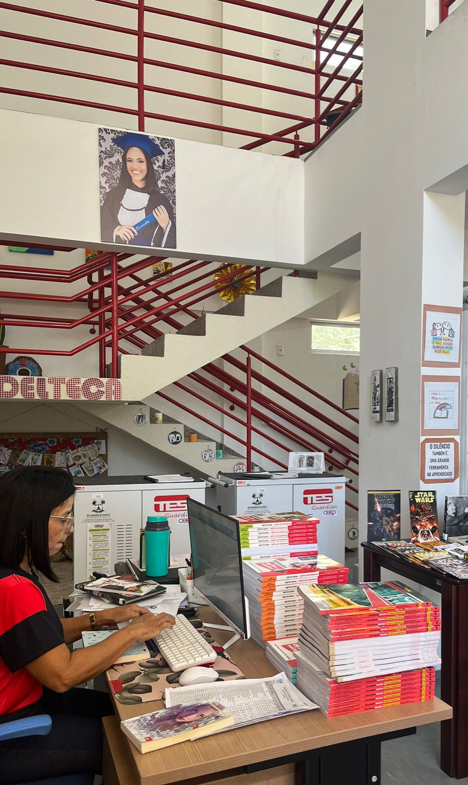
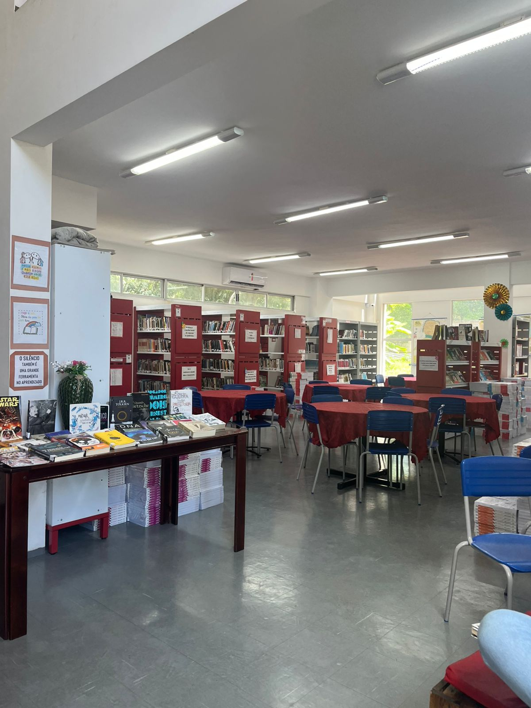

Seja bem-vindo à nossa biblioteca!
A biblioteca do CEEP recebeu esse nome em homenagem a uma aluna do curso de Informática do ano de 2017, reconhecida por ser uma das melhores estudantes da escola.
Sua trajetória foi marcada pelo esforço e dedicação aos estudos, tornando-se uma referência para os demais alunos.
Infelizmente, a estudante veio a falecer em decorrência de um câncer, e seu nome permanece como forma de homenagem e lembrança de sua história.

A biblioteca do CEEP foi pensada para os alunos, oferecendo um espaço acolhedor e organizado para a leitura, o estudo e a busca pelo conhecimento. Ao longo do tempo, tornou-se um ambiente importante dentro da escola, incentivando o hábito da leitura e contribuindo para o desenvolvimento educacional dos estudantes.
